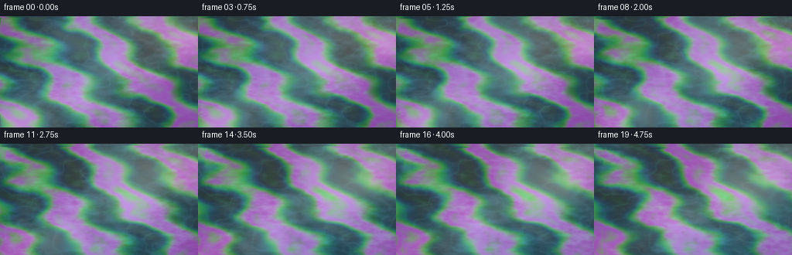
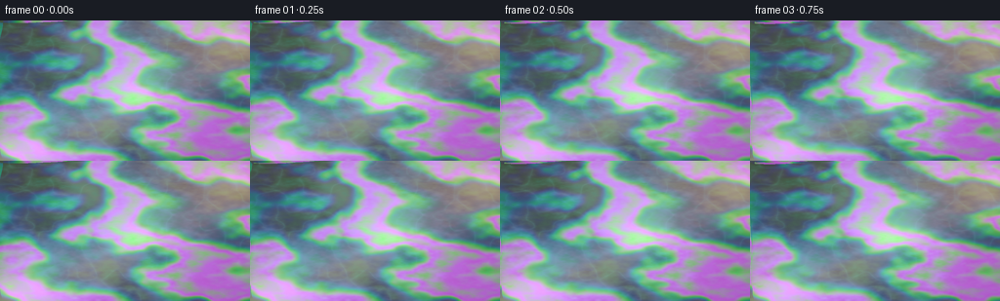
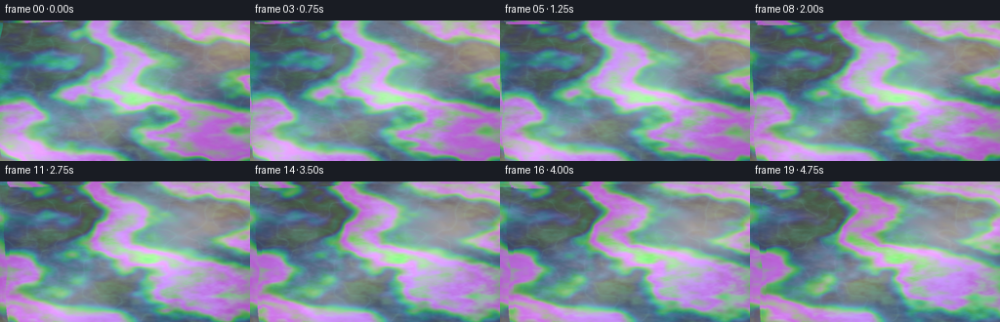
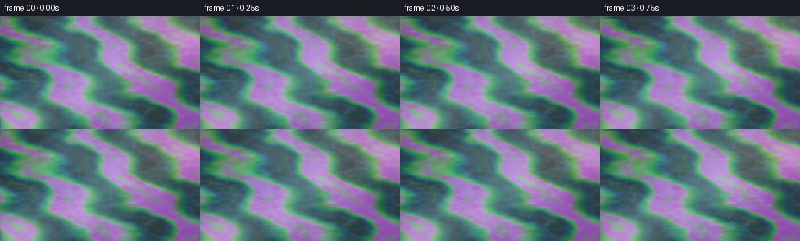
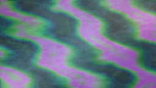
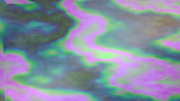
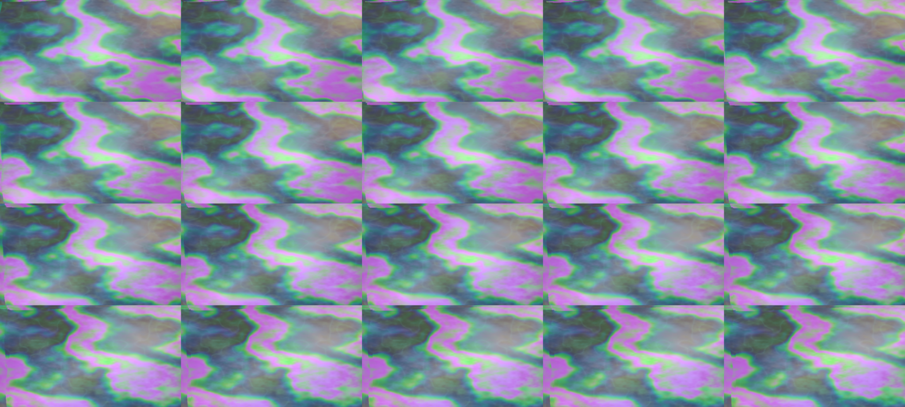

CODING AGENTS AS PIXEL WORLD MODELS
traex/DeepSeek-V4.1-Flash · phygen_084
点击播放 · 原生 RGB 像素
逐轮保存的候选
回放视频、检查图与代码变化。
每份候选均可单独播放。实际图片检查记录在下方工具轨迹中。
候选 01播放与检查图
点击播放 · 原生 RGB 像素

展开代码变化
--- 上一保存版本
+++ 本次保存版本
@@ -0,0 +1,266 @@
+from pathlib import Path
+
+import numpy as np
+from PIL import Image, ImageFilter
+
+import artifact_io
+
+
+ROOT = Path(__file__).resolve().parent
+WIDTH, HEIGHT, FRAME_COUNT, FPS = 256, 144, 20, 4.0
+SCALE = 3
+RW, RH = WIDTH * SCALE, HEIGHT * SCALE
+
+
+_noise_tables = {}
+
+
+def smoothstep(a, b, x):
+ t = np.clip((x - a) / (b - a), 0.0, 1.0)
+ return t * t * (3.0 - 2.0 * t)
+
+
+def noise_table(seed):
+ if seed not in _noise_tables:
+ rng = np.random.default_rng(seed)
+ _noise_tables[seed] = rng.random((257, 257), dtype=np.float32)
+ return _noise_tables[seed]
+
+
+def value_noise(x, y, seed):
+ """Smooth lattice noise with a fixed table for reproducible frames."""
+ ix = np.floor(x).astype(np.int32)
+ iy = np.floor(y).astype(np.int32)
+ fx = x - ix
+ fy = y - iy
+ ux = fx * fx * (3.0 - 2.0 * fx)
+ uy = fy * fy * (3.0 - 2.0 * fy)
+
+ table = noise_table(seed)
+ ix %= 256
+ iy %= 256
+ a = table[ix, iy]
+ b = table[ix + 1, iy]
+ c = table[ix, iy + 1]
+ d = table[ix + 1, iy + 1]
+ low = a + (b - a) * ux
+ high = c + (d - c) * ux
+ return low + (high - low) * uy
+
+
+def fbm(x, y, seed, octaves=4, gain=0.5, lacunarity=2.03):
+ total = np.zeros_like(x, dtype=np.float32)
+ amplitude = 1.0
+ norm = 0.0
+ frequency = 1.0
+ for octave in range(octaves):
+ total += amplitude * value_noise(
+ x * frequency + octave * 17.31,
+ y * frequency - octave * 9.73,
+ seed + octave * 31,
+ )
+ norm += amplitude
+ amplitude *= gain
+ frequency *= lacunarity
+ return total / norm
+
+
+def mix(a, b, amount):
+ return a * (1.0 - amount) + b * amount
+
+
+def make_surface(t):
+ yy, xx = np.mgrid[0:RH, 0:RW].astype(np.float32)
+ x = xx / RW
+ y = yy / RH
+
+ # The long, slow swells carry the light; smaller capillary waves break it
+ # into the fine glints that make the surface feel liquid.
+ waves = (
+ (0.82, 0.34, 0.061, 0.075),
+ (-0.30, 1.05, 0.050, 0.055),
+ (1.76, -0.64, 0.034, 0.130),
+ (-1.43, 2.06, 0.026, 0.160),
+ (3.50, 1.25, 0.016, 0.235),
+ (-4.80, 3.35, 0.010, 0.320),
+ (7.60, -5.20, 0.006, 0.440),
+ (-11.0, 8.20, 0.0038, 0.590),
+ )
+ gx = np.zeros((RH, RW), dtype=np.float32)
+ gy = np.zeros((RH, RW), dtype=np.float32)
+ for index, (fx, fy, strength, speed) in enumerate(waves):
+ norm = np.hypot(fx, fy)
+ phase = 2.0 * np.pi * (fx * x + fy * y - speed * t)
+ phase += 0.35 * np.sin(index * 2.1 + t * 0.19)
+ slope = strength * np.cos(phase)
+ gx += slope * (fx / norm)
+ gy += slope * (fy / norm)
+
+ # Domain-warped micro texture keeps the normals irregular and avoids the
+ # repetitive look of a pure sum of sine waves.
+ warp = fbm(x * 3.0 + t * 0.025, y * 3.0 - t * 0.018, 101, 3)
+ micro = fbm(
+ x * 22.0 + 0.8 * warp + t * 0.08,
+ y * 31.0 - 0.5 * warp - t * 0.06,
+ 211,
+ 3,
+ )
+ micro2 = fbm(
+ x * 46.0 - t * 0.11,
+ y * 37.0 + t * 0.09,
+ 307,
+ 2,
+ )
+ gx += (micro - 0.5) * 0.105 + (micro2 - 0.5) * 0.040
+ gy += (micro - 0.5) * 0.090 + (micro2 - 0.5) * 0.047
+
+ inv_len = 1.0 / np.sqrt(gx * gx + gy * gy + 1.0)
+ nx = -gx * inv_len
+ ny = -gy * inv_len
+ nz = inv_len
+ return x, y, nx, ny, nz, warp, micro, micro2
+
+
+def film_thickness(x, y, warp, micro, t):
+ flow_x = x + 0.045 * (warp - 0.5)
+ flow_y = y + 0.045 * (fbm(x * 2.2 - t * 0.03, y * 2.2 + t * 0.025, 409, 3) - 0.5)
+ broad = fbm(flow_x * 2.5 + t * 0.035, flow_y * 2.5 - t * 0.025, 503, 4)
+ ribbon = 0.5 + 0.5 * np.sin(
+ 2.0 * np.pi
+ * (
+ 2.35 * flow_x
+ - 1.45 * flow_y
+ + 0.70 * broad
+ + 0.10 * np.sin(2.0 * np.pi * (flow_y * 3.1 + t * 0.045))
+ )
+ )
+ fine = fbm(flow_x * 7.0 - t * 0.07, flow_y * 6.0 + t * 0.055, 601, 3)
+ d = 205.0 + 505.0 * (0.42 * broad + 0.38 * ribbon + 0.20 * fine)
+ d += 35.0 * (micro - 0.5)
+ coverage = smoothstep(0.27, 0.72, 0.36 * broad + 0.50 * ribbon + 0.14 * fine)
+ coverage = 0.20 + 0.80 * coverage
+ return np.clip(d, 170.0, 780.0), coverage
+
+
+def render_frame(frame_index):
+ t = frame_index / FPS
+ x, y, nx, ny, nz, warp, micro, micro2 = make_surface(t)
+
+ # Sun from the upper-right, low enough to rake across the water.
+ lx, ly, lz = 0.36, -0.47, 0.805
+ llen = np.sqrt(lx * lx + ly * ly + lz * lz)
+ lx, ly, lz = lx / llen, ly / llen, lz / llen
+ vx, vy, vz = 0.0, 0.0, 1.0
+ hx, hy, hz = lx + vx, ly + vy, lz + vz
+ hlen = np.sqrt(hx * hx + hy * hy + hz * hz)
+ hx, hy, hz = hx / hlen, hy / hlen, hz / hlen
+
+ ndotl = np.clip(nx * lx + ny * ly + nz * lz, 0.0, 1.0)
+ ndoth = np.clip(nx * hx + ny * hy + nz * hz, 0.0, 1.0)
+ ndotv = np.clip(nz, 0.0, 1.0)
+ fresnel = 0.025 + 0.975 * np.power(1.0 - ndotv, 5.0)
+
+ # A quiet teal reflected sky, warmed toward the sun side of the frame.
+ sky_x = smoothstep(-0.08, 0.10, nx)
+ sky_y = smoothstep(-0.06, 0.10, ny)
+ reflected_sky = np.stack(
+ (
+ 0.045 + 0.12 * sky_x + 0.03 * sky_y,
+ 0.125 + 0.22 * sky_x + 0.08 * sky_y,
+ 0.145 + 0.25 * sky_x + 0.09 * sky_y,
+ ),
+ axis=-1,
+ ).astype(np.float32)
+
+ # Thin-film interference: a few wavelength samples produce restrained
+ # petrol colors instead of an artificial rainbow palette.
+ d, coverage = film_thickness(x, y, warp, micro, t)
+ sin_i_sq = np.clip(1.0 - nz * nz, 0.0, 1.0)
+ cos_t = np.sqrt(np.clip(1.0 - sin_i_sq / (1.46 * 1.46), 0.0, 1.0))
+ optical = 4.0 * np.pi * 1.46 * d * cos_t
+ ir_r = 0.5 + 0.5 * np.cos(optical / 635.0 + np.pi)
+ ir_g = 0.5 + 0.5 * np.cos(optical / 532.0 + np.pi)
+ ir_b = 0.5 + 0.5 * np.cos(optical / 455.0 + np.pi)
+ irid = np.stack((ir_r, ir_g, ir_b), axis=-1).astype(np.float32)
+ irid = 0.18 + 0.82 * irid
+ irid *= np.array((0.86, 0.96, 1.05), dtype=np.float32)
+ irid = np.clip(irid, 0.0, 1.0)
+
+ # Water below the film. Soft caustic ridges are visible through gaps and
+ # keep the dark areas from reading as flat color.
+ caustic_a = value_noise(x * 13.0 + t * 0.10, y * 11.0 - t * 0.08, 701)
+ caustic_b = value_noise(x * 17.0 - t * 0.06, y * 15.0 + t * 0.09, 709)
+ caustic = np.power(np.clip(1.0 - np.abs(caustic_a - caustic_b) * 3.0, 0.0, 1.0), 4.0)
+ water = np.stack(
+ (
+ 0.020 + 0.035 * caustic + 0.050 * ndotl,
+ 0.075 + 0.105 * caustic + 0.105 * ndotl,
+ 0.088 + 0.100 * caustic + 0.100 * ndotl,
+ ),
+ axis=-1,
+ ).astype(np.float32)
+
+ # Broad, softly reflected sunlight plus tiny hard glints from the ripples.
+ sun_glow = np.exp(-(((x - 0.82) / 0.34) ** 2 + ((y - 0.08) / 0.26) ** 2))
+ sun_path = np.exp(-((0.62 * x + 0.78 * y - 0.79) / 0.17) ** 2)
+ broad_spec = np.power(ndoth, 13.0) * (0.23 + 0.77 * sun_path)
+ tight_spec = np.power(ndoth, 190.0)
+ glitter = np.power(ndoth, 430.0) * smoothstep(0.54, 0.76, micro2)
+ sun_tint = np.array((1.00, 0.76, 0.38), dtype=np.float32)
+
+ film_reflection = reflected_sky * (1.25 + 0.75 * coverage[..., None])
+ film_reflection = mix(film_reflection, irid * 1.10, 0.44 * coverage[..., None])
+ film_reflection += irid * (0.16 + 0.34 * broad_spec[..., None]) * coverage[..., None]
+
+ color = mix(water, film_reflection, np.clip(0.34 + 0.62 * coverage, 0.0, 0.92)[..., None])
+ color += sun_tint * (0.26 * broad_spec + 1.15 * tight_spec + 2.20 * glitter)[..., None]
+ color += np.array((0.12, 0.065, 0.018), dtype=np.float32) * sun_glow[..., None]
+ color += np.array((0.020, 0.038, 0.042), dtype=np.float32) * fresnel[..., None]
+
+ # A faint warm haze sits over the sunlit water; the upper-left stays cool.
+ warm_haze = smoothstep(-0.35, 0.95, 0.45 * x + 0.55 * (1.0 - y))
+ color += np.array((0.028, 0.017, 0.006), dtype=np.float32) * warm_haze[..., None]
+
+ # Gentle vignette and a tiny amount of grain keep the low-resolution frame
+ # from looking mathematically clean.
+ vignette = 1.0 - 0.24 * ((x - 0.50) ** 2 * 1.7 + (y - 0.50) ** 2 * 1.15)
+ color *= np.clip(vignette, 0.68, 1.0)[..., None]
+ rng = np.random.default_rng(9000 + frame_index)
+ color += (rng.random((RH, RW, 1), dtype=np.float32) - 0.5) * 0.010
+
+ # Filmic highlight rolloff and a small saturation lift.
+ color = np.maximum(color, 0.0)
+ color = 1.0 - np.exp(-1.35 * color)
+ luminance = np.sum(color * np.array((0.2126, 0.7152, 0.0722), dtype=np.float32), axis=-1, keepdims=True)
+ color = luminance + (color - luminance) * 1.16
+ color = np.clip(color, 0.0, 1.0)
+ return np.clip(color * 255.0 + 0.5, 0, 255).astype(np.uint8)
+
+
+def main():
+ frames = []
+ for index in range(FRAME_COUNT):
+ large = render_frame(index)
+ image = Image.fromarray(large, "RGB")
+
+ # Soft halation around the strongest highlights, followed by a crisp
+ # downsample that preserves the fine liquid texture.
+ highlights = np.maximum(large.astype(np.float32) - 205.0, 0.0)
+ bloom = Image.fromarray(np.clip(highlights * 2.2, 0, 255).astype(np.uint8), "RGB")
+ bloom = bloom.filter(ImageFilter.GaussianBlur(radius=3.0))
+ image = Image.fromarray(
+ np.clip(
+ np.asarray(image, dtype=np.float32) + np.asarray(bloom, dtype=np.float32) * 0.48,
+ 0,
+ 255,
+ ).astype(np.uint8),
+ "RGB",
+ )
+ image = image.resize((WIDTH, HEIGHT), Image.Resampling.LANCZOS)
+ frames.append(np.asarray(image, dtype=np.uint8))
+
+ artifact_io.save(frames, ROOT)
+
+
+if __name__ == "__main__":
+ main()
候选 02播放与检查图
点击播放 · 原生 RGB 像素


展开代码变化
--- 上一保存版本
+++ 本次保存版本
@@ -122,23 +122,26 @@
def film_thickness(x, y, warp, micro, t):
- flow_x = x + 0.045 * (warp - 0.5)
- flow_y = y + 0.045 * (fbm(x * 2.2 - t * 0.03, y * 2.2 + t * 0.025, 409, 3) - 0.5)
- broad = fbm(flow_x * 2.5 + t * 0.035, flow_y * 2.5 - t * 0.025, 503, 4)
+ warp_y = fbm(x * 2.2 - t * 0.03, y * 2.2 + t * 0.025, 409, 3)
+ flow_x = x + 0.070 * (warp - 0.5) + 0.025 * (warp_y - 0.5)
+ flow_y = y + 0.075 * (warp_y - 0.5)
+ broad = fbm(flow_x * 2.9 + t * 0.035, flow_y * 2.9 - t * 0.025, 503, 4)
+ patch = fbm(flow_x * 4.7 - t * 0.040, flow_y * 4.2 + t * 0.032, 557, 3)
ribbon = 0.5 + 0.5 * np.sin(
2.0 * np.pi
* (
- 2.35 * flow_x
- - 1.45 * flow_y
- + 0.70 * broad
- + 0.10 * np.sin(2.0 * np.pi * (flow_y * 3.1 + t * 0.045))
+ 1.35 * flow_x
+ - 0.90 * flow_y
+ + 1.15 * broad
+ + 0.52 * patch
+ + 0.12 * np.sin(2.0 * np.pi * (flow_y * 2.6 + t * 0.045))
)
)
fine = fbm(flow_x * 7.0 - t * 0.07, flow_y * 6.0 + t * 0.055, 601, 3)
- d = 205.0 + 505.0 * (0.42 * broad + 0.38 * ribbon + 0.20 * fine)
- d += 35.0 * (micro - 0.5)
- coverage = smoothstep(0.27, 0.72, 0.36 * broad + 0.50 * ribbon + 0.14 * fine)
- coverage = 0.20 + 0.80 * coverage
+ d = 165.0 + 585.0 * (0.32 * broad + 0.38 * ribbon + 0.18 * patch + 0.12 * fine)
+ d += 52.0 * (micro - 0.5)
+ coverage = smoothstep(0.24, 0.70, 0.27 * broad + 0.45 * ribbon + 0.18 * patch + 0.10 * fine)
+ coverage = 0.28 + 0.72 * coverage
return np.clip(d, 170.0, 780.0), coverage
@@ -203,18 +206,18 @@
# Broad, softly reflected sunlight plus tiny hard glints from the ripples.
sun_glow = np.exp(-(((x - 0.82) / 0.34) ** 2 + ((y - 0.08) / 0.26) ** 2))
sun_path = np.exp(-((0.62 * x + 0.78 * y - 0.79) / 0.17) ** 2)
- broad_spec = np.power(ndoth, 13.0) * (0.23 + 0.77 * sun_path)
- tight_spec = np.power(ndoth, 190.0)
- glitter = np.power(ndoth, 430.0) * smoothstep(0.54, 0.76, micro2)
+ broad_spec = np.power(ndoth, 10.0) * (0.18 + 0.82 * sun_path)
+ tight_spec = np.power(ndoth, 150.0)
+ glitter = np.power(ndoth, 330.0) * smoothstep(0.48, 0.70, micro2)
sun_tint = np.array((1.00, 0.76, 0.38), dtype=np.float32)
film_reflection = reflected_sky * (1.25 + 0.75 * coverage[..., None])
- film_reflection = mix(film_reflection, irid * 1.10, 0.44 * coverage[..., None])
- film_reflection += irid * (0.16 + 0.34 * broad_spec[..., None]) * coverage[..., None]
-
- color = mix(water, film_reflection, np.clip(0.34 + 0.62 * coverage, 0.0, 0.92)[..., None])
- color += sun_tint * (0.26 * broad_spec + 1.15 * tight_spec + 2.20 * glitter)[..., None]
- color += np.array((0.12, 0.065, 0.018), dtype=np.float32) * sun_glow[..., None]
+ film_reflection = mix(film_reflection, irid * 1.17, 0.50 * coverage[..., None])
+ film_reflection += irid * (0.20 + 0.40 * broad_spec[..., None]) * coverage[..., None]
+
+ color = mix(water, film_reflection, np.clip(0.30 + 0.65 * coverage, 0.0, 0.95)[..., None])
+ color += sun_tint * (0.34 * broad_spec + 1.35 * tight_spec + 2.45 * glitter)[..., None]
+ color += np.array((0.16, 0.085, 0.020), dtype=np.float32) * sun_glow[..., None]
color += np.array((0.020, 0.038, 0.042), dtype=np.float32) * fresnel[..., None]
# A faint warm haze sits over the sunlit water; the upper-left stays cool.
@@ -230,7 +233,7 @@
# Filmic highlight rolloff and a small saturation lift.
color = np.maximum(color, 0.0)
- color = 1.0 - np.exp(-1.35 * color)
+ color = 1.0 - np.exp(-1.62 * color)
luminance = np.sum(color * np.array((0.2126, 0.7152, 0.0722), dtype=np.float32), axis=-1, keepdims=True)
color = luminance + (color - luminance) * 1.16
color = np.clip(color, 0.0, 1.0)
候选 03播放与检查图
点击播放 · 原生 RGB 像素

展开代码变化
--- 上一保存版本
+++ 本次保存版本
@@ -1,5 +1,6 @@
from pathlib import Path
+import cv2
import numpy as np
from PIL import Image, ImageFilter
@@ -244,12 +245,12 @@
frames = []
for index in range(FRAME_COUNT):
large = render_frame(index)
- image = Image.fromarray(large, "RGB")
+ image = Image.fromarray(large)
# Soft halation around the strongest highlights, followed by a crisp
# downsample that preserves the fine liquid texture.
highlights = np.maximum(large.astype(np.float32) - 205.0, 0.0)
- bloom = Image.fromarray(np.clip(highlights * 2.2, 0, 255).astype(np.uint8), "RGB")
+ bloom = Image.fromarray(np.clip(highlights * 2.2, 0, 255).astype(np.uint8))
bloom = bloom.filter(ImageFilter.GaussianBlur(radius=3.0))
image = Image.fromarray(
np.clip(
@@ -257,13 +258,24 @@
0,
255,
).astype(np.uint8),
- "RGB",
)
image = image.resize((WIDTH, HEIGHT), Image.Resampling.LANCZOS)
frames.append(np.asarray(image, dtype=np.uint8))
artifact_io.save(frames, ROOT)
+ writer = cv2.VideoWriter(
+ str(ROOT / "gasoline_water.mp4"),
+ cv2.VideoWriter_fourcc(*"mp4v"),
+ FPS,
+ (WIDTH, HEIGHT),
+ )
+ if not writer.isOpened():
+ raise RuntimeError("Could not create MP4 preview")
+ for frame in frames:
+ writer.write(cv2.cvtColor(frame, cv2.COLOR_RGB2BGR))
+ writer.release()
+
if __name__ == "__main__":
main()
可观测工具轨迹
实际执行的命令与返回图片。
命令 1exit 0
/bin/bash -c "pwd && rg --files -g 'prompt.txt' -g 'GENERATION_RULES.md' -g 'task_spec.json' -g '"'!**/.git/**'"'"
命令 2exit 0
/bin/bash -c 'ls -la'
命令 3exit 0
/bin/bash -c "find . -maxdepth 2 -type f -not -path './.git/*' -printf '%p\\n' | sort | head -200"
命令 4exit 0
/bin/bash -c 'cat prompt.txt'
命令 5exit 0
/bin/bash -c 'cat GENERATION_RULES.md'
命令 6exit 0
/bin/bash -c 'cat task_spec.json'
命令 7exit 0
/bin/bash -c "sed -n '1,260p' artifact_io.py"
命令 8exit 0
/bin/bash -c "sed -n '1,260p' player_template.html"
命令 9exit 0
/bin/bash -c "python - <<'PY' import importlib.util for m in ['numpy','PIL','scipy','cv2']: print(m, bool(importlib.util.find_spec(m))) PY"
命令 10exit 0
/bin/bash -c 'time python generate.py'
命令 11exit 0
/bin/bash -c "python - <<'PY'
import numpy as np
from PIL import Image
from pathlib import Path
fs=sorted(Path('frames').glob('*.png'))
a=np.stack([np.asarray(Image.open(p)) for p in fs])
print('shape',a.shape,'mean',a.mean((0,1,2)).round(2),'minmax',a.min(),a.max())
d=np.abs(a[1:].astype(int)-a[:-1].astype(int)).mean((1,2,3))
print('frame diff mean/min/max',d.mean().round(3),d.min().round(3),d.max().round(3))
print('per frame means',a.mean((1,2,3)).round(2))
PY"命令 12exit 0
/bin/bash -c 'mkdir -p candidates/first_pass && cp inspection.png transition_check.png pixels.npz index.html candidates/first_pass/ && cp -r frames candidates/first_pass/frames'
命令 13exit 0
/bin/bash -c 'time python generate.py'
命令 14exit 0
/bin/bash -c "python - <<'PY'
import numpy as np
from PIL import Image
from pathlib import Path
fs=sorted(Path('frames').glob('*.png'))
a=np.stack([np.asarray(Image.open(p)) for p in fs])
print('shape',a.shape,'mean',a.mean((0,1,2)).round(2),'minmax',a.min(),a.max())
d=np.abs(a[1:].astype(int)-a[:-1].astype(int)).mean((1,2,3))
print('frame diff mean/min/max',d.mean().round(3),d.min().round(3),d.max().round(3))
print('per frame means',a.mean((1,2,3)).round(2))
print('std',a.std((0,1,2)).round(2))
PY"命令 15exit 0
/bin/bash -c "python - <<'PY'
from PIL import Image
from pathlib import Path
ims=[Image.open(f'frames/{i:02d}.png') for i in range(20)]
w,h=ims[0].size
# 5 columns, 4 rows at 2x nearest for texture inspection
s=Image.new('RGB',(w*5*2,h*4*2),(20,20,20))
for i,im in enumerate(ims):
s.paste(im.resize((w*2,h*2),Image.Resampling.NEAREST),((i%5)*w*2,(i//5)*h*2))
s.save('candidates/all_frames_2x.png')
PY"命令 16exit 0
/bin/bash -c 'du -h generate.py pixels.npz index.html inspection.png transition_check.png frames | sort -h'
命令 17exit 0
/bin/bash -c "python - <<'PY'
from pathlib import Path
from PIL import Image
import numpy as np, json, base64
p=Path('.')
a=np.stack([np.asarray(Image.open(p/f'frames/{i:02d}.png')) for i in range(20)])
assert a.shape==(20,144,256,3) and a.dtype==np.uint8
assert len(list((p/'frames').glob('*.png')))==20
z=np.load('pixels.npz')['pixels']
assert z.shape==(144,256,20) and z.dtype==np.uint32
html=(p/'index.html').read_text()
assert '__DATA__' not in html and 'window.__pixelReady' in html
print('frames:', a.shape, 'pixels.npz:', z.shape, 'index.html bytes:', len(html))
print('first/last motion (mean abs RGB):', np.abs(a[-1].astype(int)-a[0].astype(int)).mean().round(3))
print('channel means:', a.mean((0,1,2)).round(2).tolist())
print('luma p05/p50/p95:', np.percentile(a.mean(-1), [5,50,95]).round(1).tolist())
PY"命令 18exit 0
/bin/bash -c 'git status --short 2>/dev/null || true'
命令 19exit 0
/bin/bash -c "python - <<'PY'
import cv2
from pathlib import Path
paths=sorted(Path('frames').glob('*.png'))
first=cv2.imread(str(paths[0]))
h,w=first.shape[:2]
out=cv2.VideoWriter('gasoline_water.mp4',cv2.VideoWriter_fourcc(*'mp4v'),4.0,(w,h))
assert out.isOpened()
for p in paths:
out.write(cv2.imread(str(p)))
out.release()
print('wrote gasoline_water.mp4', Path('gasoline_water.mp4').stat().st_size)
PY"命令 20exit 0
/bin/bash -c 'time python generate.py'
命令 21exit 1
/bin/bash -c "python - <<'PY'
from pathlib import Path
import cv2, numpy as np
from PIL import Image
from playwright.sync_api import sync_playwright
frames=np.stack([np.asarray(Image.open(f'frames/{i:02d}.png')) for i in range(20)])
assert frames.shape==(20,144,256,3)
cap=cv2.VideoCapture('gasoline_water.mp4')
count=int(cap.get(cv2.CAP_PROP_FRAME_COUNT)); fps=cap.get(cv2.CAP_PROP_FPS)
w=int(cap.get(cv2.CAP_PROP_FRAME_WIDTH)); h=int(cap.get(cv2.CAP_PROP_FRAME_HEIGHT))
ok, frame=cap.read(); cap.release()
assert ok and (count,fps,w,h)==(20,4.0,256,144), (count,fps,w,h)
assert Path('index.html').stat().st_size > 1000000
with sync_playwright() as p:
browser=p.chromium.launch(headless=True)
page=browser.new_page(viewport={'width':900,'height':500})
page.goto(Path('index.html').resolve().as_uri())
page.wait_for_function('window.__pixelReady === true')
canvas=page.locator('#canvas')
before=canvas.screenshot()
page.locator('#seek').evaluate('(e)=>{e.value=10;e.dispatchEvent(new Event(\"input\"))}')
after=canvas.screenshot()
assert before "'!= after
browser.close()
print('"'validated:', count, 'frames,', fps, 'fps,', w, 'x', h, '; player renders and seeks')
print('mp4 bytes:', Path('gasoline_water.mp4').stat().st_size)
PY"命令 22exit 1
/bin/bash -c 'mkdir -p .tmp/playwright && TMPDIR="$PWD/.tmp/playwright" python - <<'"'PY'
from pathlib import Path
import cv2, numpy as np
from PIL import Image
from playwright.sync_api import sync_playwright
frames=np.stack([np.asarray(Image.open(f'frames/{i:02d}.png')) for i in range(20)])
assert frames.shape==(20,144,256,3)
cap=cv2.VideoCapture('gasoline_water.mp4')
count=int(cap.get(cv2.CAP_PROP_FRAME_COUNT)); fps=cap.get(cv2.CAP_PROP_FPS)
w=int(cap.get(cv2.CAP_PROP_FRAME_WIDTH)); h=int(cap.get(cv2.CAP_PROP_FRAME_HEIGHT))
ok, frame=cap.read(); cap.release()
assert ok and (count,fps,w,h)==(20,4.0,256,144), (count,fps,w,h)
with sync_playwright() as p:
browser=p.chromium.launch(headless=True)
page=browser.new_page(viewport={'width':900,'height':500})
page.goto(Path('index.html').resolve().as_uri())
page.wait_for_function('window.__pixelReady === true')
canvas=page.locator('#canvas')
before=canvas.screenshot()
page.locator('#seek').evaluate('(e)=>{e.value=10;e.dispatchEvent(new Event(\"input\"))}')
after=canvas.screenshot()
assert before "'!= after
browser.close()
print('"'validated:', count, 'frames,', fps, 'fps,', w, 'x', h, '; player renders and seeks')
print('mp4 bytes:', Path('gasoline_water.mp4').stat().st_size)
PY"命令 23exit 0
/bin/bash -c "python - <<'PY'
from pathlib import Path
import base64, json, re
import numpy as np
from PIL import Image
import cv2
root=Path('.')
frames=np.stack([np.asarray(Image.open(root/'frames'/f'{i:02d}.png')) for i in range(20)])
assert frames.shape==(20,144,256,3) and frames.dtype==np.uint8
packed=np.load(root/'pixels.npz')['pixels']
expected=((frames.astype(np.uint32)[:,:,:,0]<<16)|(frames.astype(np.uint32)[:,:,:,1]<<8)|frames.astype(np.uint32)[:,:,:,2]).transpose(1,2,0)
assert np.array_equal(packed,expected)
html=(root/'index.html').read_text()
m=re.search(r'const DATA=(\\{.*?\\}),W=DATA',html)
assert m
data=json.loads(m.group(1))
assert (data['width'],data['height'],data['frames'],data['fps'])==(256,144,20,4.0)
def unpack(s):
raw=base64.b64decode(s)
return np.frombuffer(raw,dtype='<u4')
current=unpack(data['first']).copy()
assert np.array_equal(current,expected[:,:,0].reshape(-1))
for i,delta in enumerate(data['deltas'],1):
p=unpack(delta); j=0
while j<len(p):
start,count=int(p[j]),int(p[j+1]); j+=2
current[start:start+count]=p[j:j+count]; j+=count
assert np.array_equal(current,expected[:,:,i].reshape(-1)), i
cap=cv2.VideoCapture(str(root/'gasoline_water.mp4'))
assert cap.isOpened()
meta=(int(cap.get(cv2.CAP_PROP_FRAME_COUNT)),cap.get(cv2.CAP_PROP_FPS),int(cap.get(cv2.CAP_PROP_FRAME_WIDTH)),int(cap.get(cv2.CAP_PROP_FRAME_HEIGHT)))
cap.release()
assert meta==(20,4.0,256,144),meta
print('PASS: 20 RGB frames, 256x144 @ 4 fps; npz, embedded player deltas, and MP4 all match')
print('PASS: artifacts', sorted(p.name for p in root.iterdir() if p.is_file()))
PY"视觉工具实际返回图片 1

视觉工具实际返回图片 2

视觉工具实际返回图片 3

视觉工具实际返回图片 4

视觉工具实际返回图片 5

视觉工具实际返回图片 6

保存候选 3 份；完成命令 23 次；可验证图片返回 6 张。原始 API 响应与完整日志保留在本地。